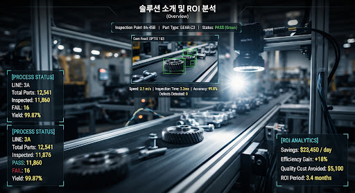

어떤 제조 부품이든 24시간 내 초경량 비전 AI 모델로 맞춤 최적화
산업용 카메라 40대, 초당 10개 부품 초고속 인라인 전수 검사. 35ms 초저지연 판정부터 PLC 배출기 즉각 제어까지 완벽 구현. 설계 도면과 불량 로그는 사내 폐쇄망에 100% 영구 격리됩니다.

부품 변경부터 현장 엣지 이식까지 단 24시간 파이프라인
외부 개발사에 의존하지 않고 사내 공장 품질팀이 자체 데이터셋 등록, 자동 경량화, PLC 신호 연동을 원스톱으로 마칩니다.
소량 데이터 등록 & 합성 증강
부품 생산 라인이 변경되어도 정상품 샘플 20~50장만으로 패치 기반 비지도 이상치 탐지(PatchCore)를 즉시 초기화합니다.
AutoML 경량화 & INT8 양자화
YOLOv8-nano 및 PatchCore 알고리즘을 하이브리드 조합. 100MB 미만의 초경량 런타임 엔진으로 10대 동시 자동 컴파일.
엣지 PC 10대 배포 & 즉각 제어
Docker 컨테이너를 통해 내부망 즉시 이식. 50ms 이내 실린더 Ejector를 타격하여 불량품을 컨베이어 밖으로 고속 분리.
도입 즉시 검증되는 6.8개월 손익분기점(BEP)과 3년 TCO
실제 제조 공장 3교대 육안 검사자 인건비와 클라우드 비용을 엣지 인프라로 대체했을 때의 정량적 회수 모델입니다.
클라우드 대비 온프레미스 엣지 3년 TCO 10.5억 원 절감
초당 400 FPS의 고용량 비전 스트림을 외부 클라우드로 전송 시 발생하는 비현실적인 전용회선 요금 및 GPU 서버 대여 비용을 완전히 배제합니다.
산업용 GPU PC 10대 및 라이선스는 공장 사내 자산으로 영구 귀속되며, 네트워크 단절 시에도 365일 24시간 자율 가동됩니다.
현장 표준 규격 호환 및 하드웨어 아키텍처
산업용 GPU 엣지 PC
총 10대 노드 클러스터NVIDIA RTX급 탑재. PC 1대당 고속 카메라 4대 스트림 병렬 처리(40 FPS). 팬리스 방열 설계로 분진 및 진동 환경 최적화.
GigE Vision & GenICam
총 40대 인라인 연동기성 메이저 머신비전 카메라(Basler, Teledyne, Hikrobot) 전 제품 플러그앤플레이 지원. 하드웨어 외부 스트로보 트리거 동기화.
초고속 PLC & I/O 제어
Modbus TCP / OPC UA / DI/O미쓰비시, 지멘스, LS일렉트릭 PLC 규격 즉각 연동. 35ms 이내 판정 완료 신호를 실린더 Ejector로 다이렉트 트리거링.
에어갭 폐쇄망 배포 체계
도커 프라이빗 레지스트리물리적으로 외부 인터넷이 차단된 상태에서 보안 USB 또는 사내 격리 LAN망을 통해 100MB급 경량 모델 바이너리 즉각 전송.
지금 귀사 부품 샘플로 24시간 실증 PoC를 시작하십시오
공장 방문 없이도 소량의 정상/불량 이미지셋을 통해 부품당 35ms 판정 레이턴시와 0.01% 불량 유출률을 사내 폐쇄망 환경에서 사전 검증해드립니다.